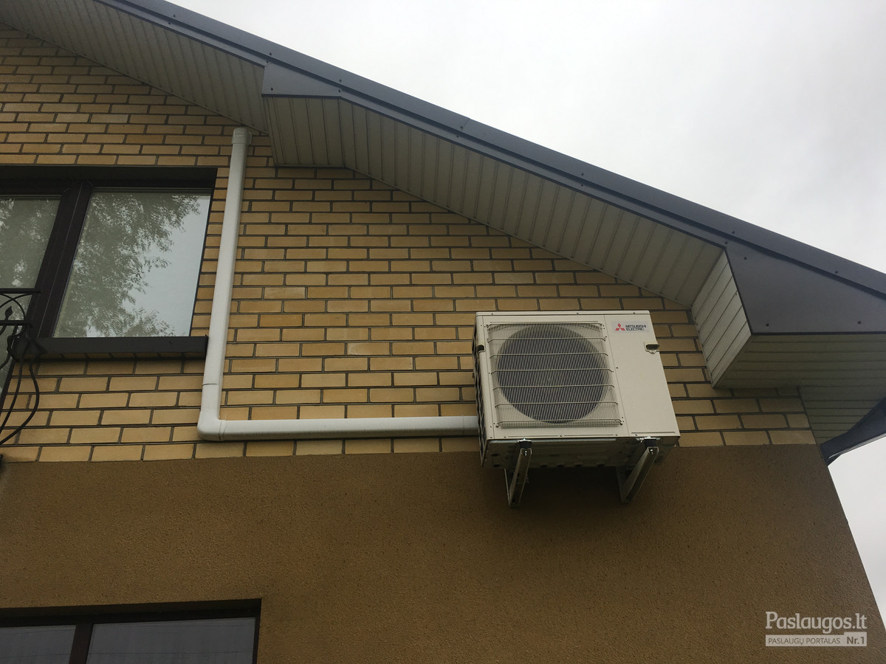

Rekuperatoriai | Orokondicionieriai.pro
- Rekuperatoriai, kaina | rekuperatoriucentras.lt
Rekuperatoriai ir minirekuperatoriai (275) Akcijos ir naujienos; Rekuperatoriai (96) Mini rekuperatoriai (18) Geoterminiai šilumokaičiai rekuperatoriai; Rekuperatorius + šilumos siurblys „oras-oras“ (3) Lanksčių ortakių sistemos (82) Priedai (55) Plyšiniai difuzoriai (10) Difuzoriai (7) Įleidžiami, priglaistomi difuzoriai (4) - Rekuperatoriai, rekuperacinės sistemos | namams24.lt
Rekuperatoriai butams gali būti įrengiami pasirinkus iš plataus modelių sąrašo. Pagrindinis buto pertvarkymas būtų tas, kad reikėtų plano, kaip kuo geriau pravesti ortakius. Geri meistrai pasirūpins, kad nuo to nenukentėtų Jūsų buto lubų aukštis. Taip pat Jūs visada galite rinktis ir sieninius rekuperatorius. - Rekuperatoriai | Mini Rekuperatoriai | Gedarta.lt
Rekuperatoriai – tai šilumokaičiai, kuriuose iš kambario išeinantis šildomas oras didžiąją dalį šilumos atiduoda šaltam orui, patenkančiam iš lauko. Tai yra, – išeinantis oras šildo įeinantį. Žiema prisimename šiltas vasaros dienas ir laukiame, kol grįš šiluma. Tačiau mes negalime laukti gamtos malonumų, todėl ... - Rekuperatoriai butui | sildymas-vedinimas.lt
Rekuperatoriai namams, butams ir komercinių patalpų vėdinimui. Rekuperatoriai su rotaciniais, plokšteliniais šilumokaičiais. Įrenginių našumas nuo 50 iki 25 000 m3/h. Mūsų kataloge esantys rekuperatoriai gali ne tik vėdinti bet ir šildyti patalpas (žr. konkretų modelį). - Rekuperatoriai | Orokondicionieriai.pro
Rekuperatoriai – pagrindiniai prietaisai, kurie yra skirti užtikrinti tinkamą vėdinimą ir šilumos išlaikymą. Konsultuokitės tel. +370 670 26670 - Rekuperatoriai | Vilpra.lt: Šiluma Jūsų namams
Domina rekuperatoriai, vėdinimo, kondicionavimo ir šildymo sistemos bei montavimo paslaugos gera kaina? Mes galime padėti! Susisiekite tel. +370 (693) - Rekuperatoriai | Šilumos atgavimo įrenginiai ...
Efektyviai veikiantys mini rekuperatoriai privatiems ir verslo objektams. Skirtingos charakteristikos rekuperacinė įranga, geriausios kainos garantija. - Rekuperatoriai | Šilumos siurblių ir vėdinimo sistemų ...
Rekuperatoriai + Užklausti + Titon Rekuperatorius + Atrea Rekuperatorius + Itho Rekuperatorius + Brofer Rekuperatorius + Brink Rekuperatorius. Siekiame, kad kiekvienas klientas būtų patenkintas atliktų darbų kokybė ... - Beortakiniai rekuperatoriai - HomeAir
Brofer firmos rekuperatoriai pasižymi aukštu šilumos grąžos efektyvumu – iki 90%, energijos efektyvumo klasė A. Šios firmos produktų serijoje rasite ne tik begalo platų asortimentą, bet ir prekes, kurios stebins inovatyviais inžineriniais sprendimais bei savo kokybe.Rekuperatorių galingumas vyrauja nuo 160 m 3 /h iki 470 m 3 /h ... - Rekuperatoriai | Oris.lt - Šildymas, Šaldymas, Vėdinimas
Rekuperatoriai - šiuolaikiškas ir praktiškas sprendimas, reikalaujantis nedidelių investicijų ir tuo pačiu padeda taupyti. Jų sistemos yra yra kelių rūšių.

info@orokondicionieriai.pro info@omelon.lt +37062131114 Mano paskyra Registruotis Prisijungti Pageidavimai (0) Prekių krepšelis Atsiskaitymas 0 prekė(s) - 0.00€
Jūsų prekių krepšelis tuščias
Kategorijos Oro kondicionieriai Alpic Air Mitsubishi Electric Daikin Samsung Panasonic Electrolux Midea LG Gree Cooper and Hunter Toshiba Mitsubishi Heavy Industries Fujitsu Ballu VIVAX Kaisai MDV Žiūrėti visusOro kondicionieriai Šilumos siurbliai oras-oras Šilumos siurbliai oras-oras Daikin Šilumos siurbliai oras-oras Mitsubishi Electric Šilumos siurbliai oras-oras Samsung Šilumos siurbliai oras-oras Cooper and Hunter Šilumos siurbliai oras-oras Midea Žiūrėti visusŠilumos siurbliai oras-oras Šilumos siurbliai oras-vanduo Šilumos siurbliai oras-vanduo Daikin Šilumos siurbliai oras-vanduo Atlantic Šilumos siurbliai oras-vanduo Panasonic Šilumos siurbliai oras-vanduo Mitsubishi Electric Šilumos siurbliai oras-vanduo Samsung Šilumos siurbliai oras-vanduo Electrolux Šilumos siurbliai oras-vanduo Gree Žiūrėti visusŠilumos siurbliai oras-vanduo Rekuperatoriai Rekuperatoriai Electrolux Rekuperatoriai Mitsubishi Electric Rekuperatoriai Daikin Rekuperatoriai Wolf Rekuperatoriai Komfovent Rekuperatoriai Systemair Rekuperatoriai Salda Žiūrėti visusRekuperatoriai Mobilūs kondicionieriai Montavimo paslaugos Kontaktai Rekuperatoriai Oro kondicionieriai Šilumos siurbliai oras-oras Šilumos siurbliai oras-vanduo Rekuperatoriai -Rekuperatoriai Electrolux -Rekuperatoriai Mitsubishi Electric -Rekuperatoriai Daikin -Rekuperatoriai Wolf -Rekuperatoriai Komfovent -Rekuperatoriai Systemair -Rekuperatoriai Salda Mobilūs kondicionieriaiRekuperatoriai
Rekuperatoriai – tai šilumokaičiai, kuriuose iš kambario išeinantis šildomas oras didžiąją dalį šilumos atiduoda šaltam orui, patenkančiam iš lauko. Tai yra, – išeinantis oras šildo įeinantį.
Žiema prisimename šiltas vasaros dienas ir laukiame, kol grįš šiluma. Tačiau mes negalime laukti gamtos malonumų, todėl paimti šilumą iš oro yra mūsų užduotis. Tai jau seniai suprato energiją taupančios įrangos gamintojai, pradėję siūlyti modernius, patikimus, energiją tausojančius ir namų komfortą užtikrinančius įrenginius. Šiandien didžiausias dėmesys skiriamas rekuperatoriui – prietaisui, leidžiančiam grąžinti šilumą. Skirtingos galios ir techninių duomenų rekuperatoriai yra lengvai pritaikomi prie individualių poreikių ir padeda kurti sveiką, švarų ir komfortišką mikroklimatą.
Patikslinkite paiešką
Rekuperatoriai Electrolux Rekuperatoriai Mitsubishi Electric Rekuperatoriai Daikin Rekuperatoriai Wolf Rekuperatoriai Komfovent Rekuperatoriai Systemair Rekuperatoriai SaldaPrekių palyginimas (0) Rūšiuoti pagal: Standartinė Pavadinimas (A - Z) Pavadinimas (Z - A) Kaina (Žema Aukšta) Kaina (Aukšta Žema) Prekės kodas (A - Z) Prekės kodas (Z - A) Rodyti: 21 25 50 75 100
Domekt CF 250 F
Domekt CF įrenginių privalumai· Šiluminės energijos taupymasVėdinimo metu iš patalpos šalina..
1,150.00€
Į krepšelįDomekt CF 250 V
Domekt P įrenginių privalumai· Šiluminės energijos taupymasVėdinimo metu iš patalpos šalinam..
1,100.00€
Į krepšelįDomekt CF 400 V
Domekt P įrenginių privalumai· Šiluminės energijos taupymasVėdinimo metu iš patalpos šalinam..
1,800.00€
Į krepšelįDomekt CF 500 F
Domekt CF įrenginių privalumai· Šiluminės energijos taupymasVėdinimo metu iš patalpos šalina..
1,800.00€
Į krepšelįDomekt CF 700 H
Domekt CF įrenginių privalumai· Šiluminės energijos taupymasVėdinimo metu iš patalpos šalina..
2,200.00€
Į krepšelįDomekt CF 700 V
Domekt P įrenginių privalumai· Šiluminės energijos taupymasVėdinimo metu iš patalpos šalinam..
2,200.00€
Į krepšelįDomekt P 400 H
Domekt P įrenginių privalumai· Šiluminės energijos taupymasVėdinimo metu iš patalpos šalinam..
1,500.00€
Į krepšelįDomekt P 400 V
Domekt P įrenginių privalumai· Šiluminės energijos taupymasVėdinimo metu iš patalpos šalinam..
1,550.00€
Į krepšelįDomekt P 700 H
Domekt P įrenginių privalumai· Šiluminės energijos taupymasVėdinimo metu iš patalpos šalinam..
1,950.00€
Į krepšelįDomekt P 700 V
Domekt P įrenginių privalumai· Šiluminės energijos taupymasVėdinimo metu iš patalpos šalinam..
1,990.00€
Į krepšelįDomekt P 900 H
Domekt P įrenginių privalumai· Šiluminės energijos taupymasVėdinimo metu iš patalpos šalinam..
2,200.00€
Į krepšelįDomekt P 900 V
Domekt P įrenginių privalumai· Šiluminės energijos taupymasVėdinimo metu iš patalpos šalinam..
2,300.00€
Į krepšelįDomekt PP 300 V
Domekt P įrenginių privalumai· Šiluminės energijos taupymasVėdinimo metu iš patalpos šalinam..
1,500.00€
Į krepšelįDomekt PP 450 V
Domekt P įrenginių privalumai· Šiluminės energijos taupymasVėdinimo metu iš patalpos šalinam..
1,850.00€
Į krepšelįDomekt R 200 V
Domekt R įrenginių privalumai· Šiluminės energijos taupymasVėdinimo proceso metu šiluma iš š..
1,350.00€
Į krepšelįDomekt R 250 F
Domekt R įrenginių privalumai· Šiluminės energijos taupymasVėdinimo proceso metu šiluma iš š..
1,350.00€
Į krepšelįDomekt R 300 V
Domekt R įrenginių privalumai· Šiluminės energijos taupymasVėdinimo proceso metu šiluma iš šalinamo..
1,500.00€
Į krepšelįDomekt R 400 F
Domekt R įrenginių privalumai· Šiluminės energijos taupymasVėdinimo proceso metu šiluma iš š..
1,600.00€
Į krepšelįDomekt R 400 H
Domekt R įrenginių privalumai· Šiluminės energijos taupymasVėdinimo proceso metu šiluma iš š..
1,800.00€
Į krepšelįDomekt R 400 V
Domekt R įrenginių privalumai· Šiluminės energijos taupymasVėdinimo proceso metu šiluma iš š..
1,500.00€
Į krepšelįDomekt R 450 V
Domekt R įrenginių privalumai· Šiluminės energijos taupymasVėdinimo proceso metu šiluma iš š..
1,750.00€
Į krepšelį 1 2 3 4 5 | Rodoma nuo 1 iki 21 iš 93 (5 puslapių)Informacija
Apie mus Siuntimas ir pristatymas Privatumo politika Naudojimo taisyklės Montavimo paslaugos KontaktaiAptarnavimas
Susisiekite su mumis Grąžinimo forma Svetainės žemėlapisPriedai
Prekių ženklai Dovanų kuponai Partnerystės programa Specialūs pasiūlymaiMano paskyra
Mano paskyra Užsakymų istorija Pageidavimų sąrašas Naujienų prenumerataUAB "OMELON" 2011-2020
